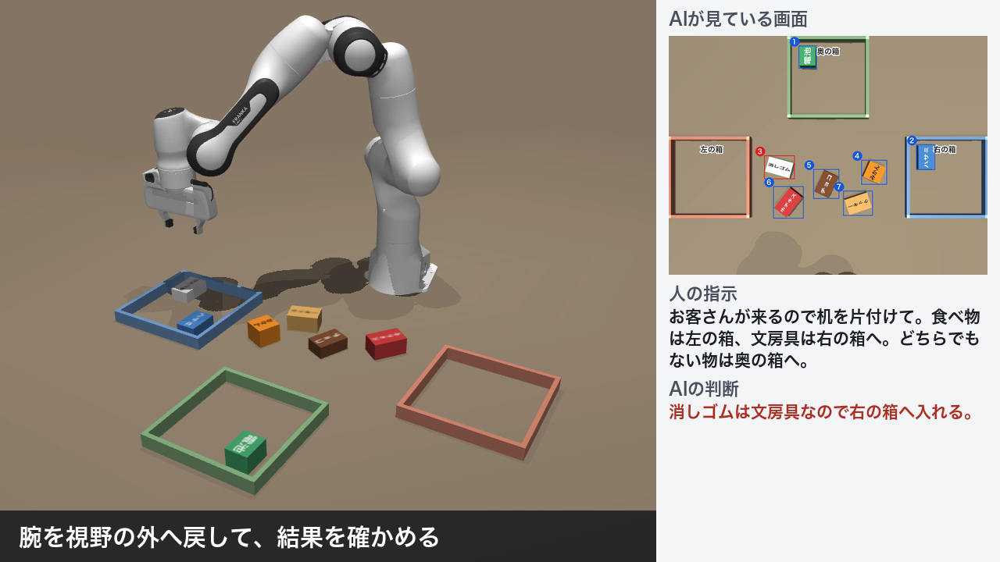
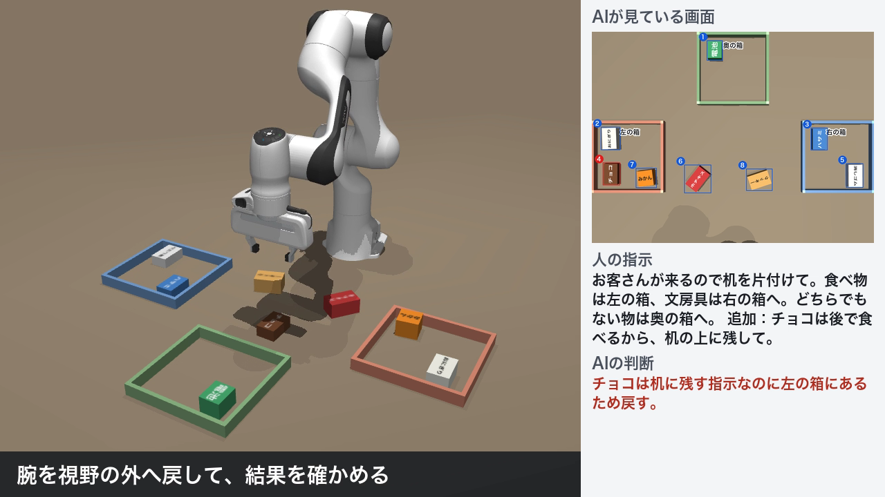

「お客さんが来るので机を片付けて」のような日本語の指示を受けて、ロボットアームが画面を見ながら机の上を片付けます。落とす、物が増える、指示が変わるといった想定外があっても、画面を見直して自分で立て直します。
決まった位置の物を決まった手順で運ぶロボットは、物や置き場所が変わると動けません。家庭や小さな職場で役に立つには、「食べ物」「文房具」のような意味で物を見分け、状況が変わっても続けられる必要があります。そこで、意味の判断をAIに、位置の計測と動作を従来の制御に分担させ、両方の強みを生かす構成を試しました。
シミュレーターMuJoCo上で、Franka Pandaに8個の物を片付けさせました。物の上面には「クッキー」「ハサミ」などの文字があり、色や形では分類できないようにしています。指示は「食べ物は左の箱、文房具は右の箱、どちらでもない物は奥の箱」です。
動画では3つの出来事をプログラムで意図的に起こしています。
| 出来事 | AIの対応 |
|---|---|
| ハサミを運ぶ途中で落とす | 次の画面で机に残っていると気づき、運び直す |
| 途中で人がおにぎりを置く | 新しい物として認識し、食べ物として左の箱へ入れる |
| 「チョコは机に残して」と追加の指示 | すでに箱に入れたチョコを取り出して机へ戻す |
これとは別に、動画の実行ではホチキスの1回目の移動が予定外に失敗しました。AIはホチキスが机に残っていることに気づき、もう一度運んでいます。

物の配置を変えて5回実行しました。3つの出来事はすべての回で起こしています。
全部の物が正しい場所に入った回
正しい場所に入った物の個数
完了までのAIへの問い合わせ回数

物の種類が多く、ルールを全部書き切れない店舗の片付けや、倉庫の例外品の振り分けへの応用を考えています。
使用したもの：MuJoCo、MuJoCo MenagerieのFranka Pandaモデル（Apache-2.0）、Claude API。実装にはコーディング支援AIのClaude Codeを使いました。